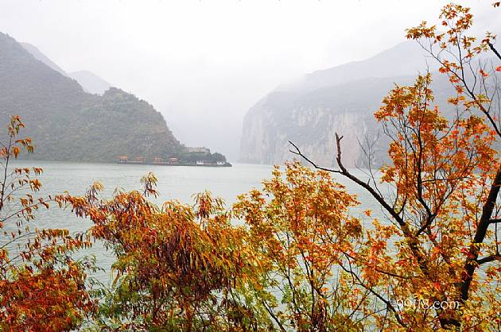
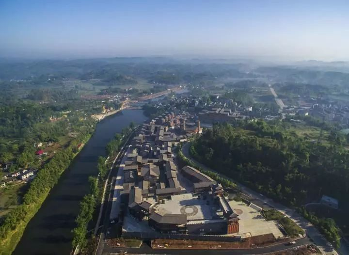

中国驰名商标
奉节县
心，是渝东北地区的门户。
奉节县东邻巫山县，南界湖北省恩施市，西连云阳
县，北接巫溪县。至2013年，户籍人口107.27万人;30个
乡镇，幅员面积4087平方公里。
奉节县旅游资源以自然资源和人文资源为主，主要
|  | 三峡之巅风景区位于重庆市奉节县。地处长江三峡之首，因杜甫“赤甲白盐俱刺天，闾阎缭绕接山巅”的诗句而得名，是长江三峡物理形态的最高处，景观形态的最美处。游客将在海拔1388米的长江三峡最高处，鸟瞰欣赏瞿塘峡两岸如诗如画的风景。“万里长江，最美三峡，延绵七百里，自奉节始。” |
| 白帝城位于重庆奉节县瞿塘峡口的长江北岸,三峡的著名游览胜地。原名子阳城，为西汉末年割据蜀地的公孙所建。白帝城是观“夔门天下雄”的最佳地点。历代著名诗人李白、杜甫、白居易、刘禹锡、苏轼、黄庭坚、范成大、陆游等都曾登白帝，游夔门，留下大量诗篇，因此白帝城又有“诗城”之美誉。 | |
|  | 青龙镇大窝社区，为奉节县原一磺厂所在地。1951年，省属国企一磺厂在此成立，全盛时期硫磺年产量达7000余吨，创造税收占全县当时GDP的1/3。因受硫磺侵蚀，土地酸化、石漠化加剧，废物滥排导致厂区农作物连年减产……2015年，一磺厂完成了历史使命，实施政策性关闭，正式退出历史舞台。一磺厂关闭后，为摆脱困境，探索新出路，大窝社区积极实施石漠化治理 |